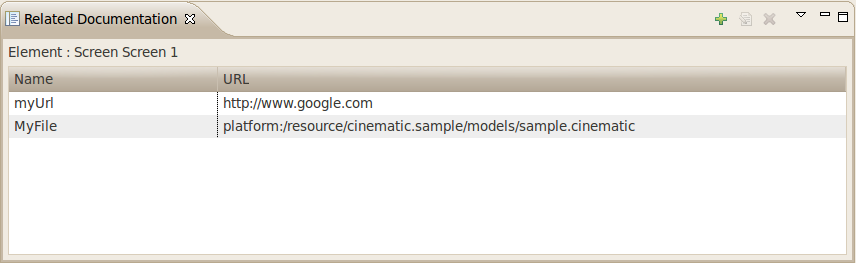
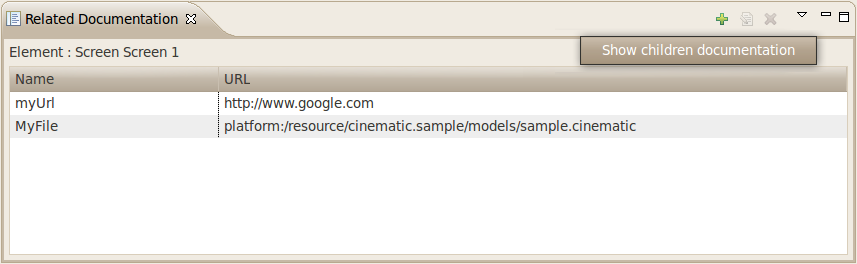
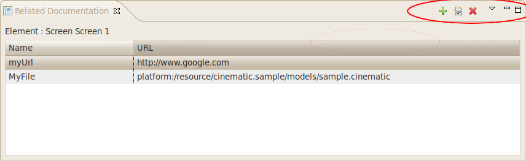
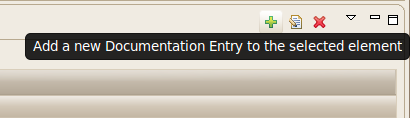
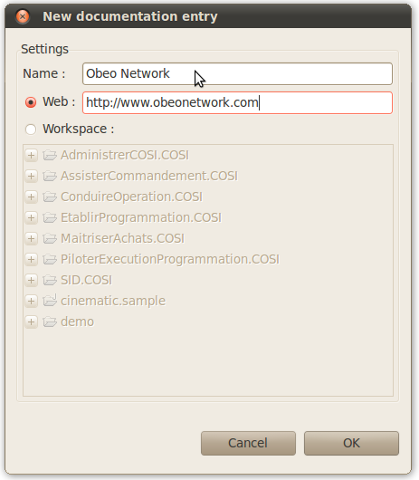
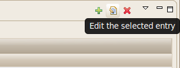
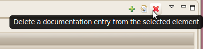
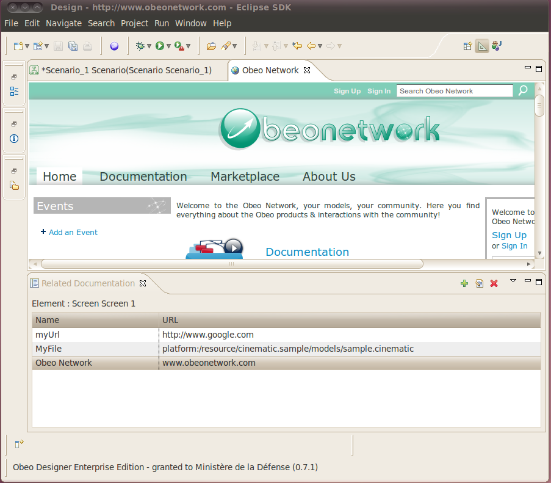

Copyright © 2008, 2026 Obeo - All rights reserved. This program and the accompanying materials are made available under the terms of the Eclipse Public License v2.0
L’outillage de documentation d’IS Designer permet d’associer de la documentation aux modèles. La vue Related Documentation permet d’ajouter, de modifier et de supprimer des liens de documentation sur les éléments de modèles.
Ouvrir la vue Related Documentation depuis le menu :
Window > Show View > Other... > Related Documentation (catégorie Information System Designer)

La vue est composée d’un tableau affichant toutes les entrées de documentation liées à l'élément actuellement sélectionné dans IS Designer. La vue peut également présenter les liens de documentation des éléments contenus par la sélection actuelle. L’activation de cette fonctionnalité se fait via l’action Show children documentation dans le menu de la vue.

La vue comporte également trois actions permettant d’ajouter, d'éditer ou de supprimer un lien de documentation.

Sélectionner l'élément auquel ajouter un lien de documentation, puis utiliser la première action de la vue.

Une fois lancée, l’action ouvre une boîte de dialogue permettant de saisir le nom du lien ainsi que sa référence. La référence peut être un lien web ou un fichier de l’espace de travail.

Sélectionner le lien à modifier, puis utiliser la deuxième action de la vue. La boîte de dialogue d'édition du lien s’ouvre à nouveau.

Sélectionner les liens à supprimer, puis utiliser la troisième action de la vue.

En lançant cette action, toutes les entrées sélectionnées dans la vue seront retirées de l'élément. Une boîte de confirmation s’ouvre de façon à éviter toute erreur de manipulation.
Effectuer un double-clic sur une entrée de la vue Related Documentation pour ouvrir :
